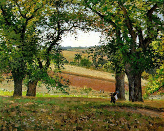

Bava Batra 37 - Selling the Land but Keeping the Trees

If one sold his land and retained the trees on it for himself, he has a certain amount of land around the trees, so that if his trees die, he is entitled to plant others.
Does this not contradict Rabbi Akiva's ruling that a seller sells generously, which we have learned from the following: when one sells a house or a field, but not a well located in its midst, then Rabbi Akiva says that he sells the entire house, leaving himself no right-of-way in it at all ?
In fact, even Rabbi Akiva would agree to the ruling about trees. The tree weakens the surrounding soil, and the seller worries that if the tree dies, the buyer may tell him, "Uproot your tree and be gone!" and thus the seller reserves land around the trees for himself.